A dream you dream alone is only a dream.
A dream you dream together is reality.
A dream you dream together is reality.
John Lennon


Just Like in a Game of Whack-a-Mole
It’s Hard to Catch a Mole. Because You Don’t Know,
When It Will Pop up
Same as Whack-a Mole,
When It Will Pop up
Detecting Arrhythmia Has Been Difficult
Because We Missed the ‘Moment’
When the Arrhythmia Event Occured
the world's only
AI that predicts
the timing of arrhythmia.
Until now, Diagnosing Arrhythmia Was Like
Vaguely Casting a Fishing Rod and Waiting
AS - IS

-
Suspecting symptoms led to an ECG measurement,but resulted in a normal diagnosis
Subjective judgments by the medical team.

-
Wearingdevices without predictive capabilitiescan sometimes be meaningless suffering

-
The challenge of arrhythmia diagnosis,failure in patient management(side effects such as stroke, cardiac arrest, death, etc.)
AS - IS
-
Suspecting symptoms led to an ECG measurement,but resulted in a normal diagnosis
-
Wearingdevices without predictive capabilitiescan sometimes be meaningless suffering
-
The challenge of arrhythmia diagnosis,failure in patient management(side effects such as stroke, cardiac arrest, death, etc.)
Just Like a SONAR Vessels that
Predicts the Movement Path of Fish and Spreads Fishing-nets,
It Predicts Arrhythmia Events
and Makes Sure to Catch Them.
TO - BE
-
Suspecting symptoms led to an ECG measurement,but resulted in a normal diagnosis

-
Based on a dataset of over |3 million records,make prediction of arrhythmia events.(92.7% accuracy)
-
Based on evidence,Holter monitoring or wearing wearable devices

-
Improvement in early diagnosis ratesClear treatment strategiesPrevention of serious side effects
TO - BE
-
Suspecting symptoms led to an ECG measurement,but resulted in a normal diagnosis
-
 Based on a dataset of over |3 million records,make prediction of arrhythmia events.(92.7% accuracy)
Based on a dataset of over |3 million records,make prediction of arrhythmia events.(92.7% accuracy) -
Improvement in early diagnosis ratesClear treatment strategiesPrevention of serious side effects
It prevents stroke and sudden death
through arrhythmia prediction.
Artificial intelligence smartly safeguards your and your family's future
It captures hidden messages in each heartbeat,
not missing a single moment of cardiac activity.
 


Ellipsoid measurement method:
Average error rate of
10 ~ 30%
 Easy.
Easy.-
Your dedicated nights for the patients,The healthy miracles you've built, now safeguarded by A.I.Now, entrust it without worries.
 Fast.
Fast.-
With processing speeds over 500 times faster than humans,While you sleep, it diligently completes all data tasks./div>And of course, it never gets tired.
ADPKD
Adding precision to treatment.
Error-free healthcare, dedication that goes beyond perfection